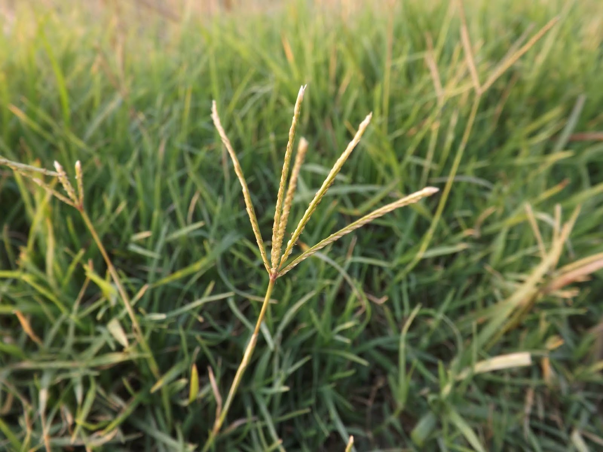

Gallery



Local name: দূর্বা, দুবলা
English name: Bermuda grass, Devil's grass
Scientific name: Cynodon dactylon
Family: Poaceae
Perennial grass, herb, climbing, and creeping. Rhizomes and stolons grow deeply in the soil.
Dry or moist well-drained soils. Cannot persist in waterlogged areas.
Mainly kharif but found all over the year. Seeds can germinate throughout the year if moisture supply is adequate.
Aus rice, jute, sugarcane, maize, etc.
Propagates mainly by stolons and rhizomes; produces few seeds; seeds can survive submergence up to 50 days.
Linear, grey-green, narrow.
Long, smooth, and cylindrical.
Finger-like spread.
Shallow, fibrous root system.
Difficult to control because detached fragments regenerate easily. Can be controlled by deep ploughing so that their rhizomes come out under the sun and are destroyed.